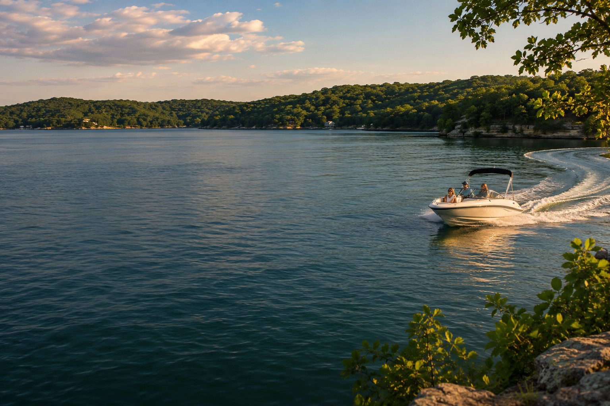

Lake of the Ozarks. A state of mind.
Life’s better
past the
no-wake zone.
For dock mornings, long weekends,
and the ones who always find one more cove.
The next chapter
Your weekend uniform.
Original graphics. Easygoing layers. A little piece of the lake to take with you.
Meet the concepts we’re working on. Mockups are illustrative; final products, colors, sizes, and prices will be confirmed before ordering opens.
A place. A pace. A feeling.
You don’t have
to live here
to live the life.
Maybe the lake is home. Maybe it’s the place you count down to all week. Either way, you know the feeling: the lines come off, the noise falls away, and the day opens up.
That’s LOTO Life. Inspired by Lake of the Ozarks and made for everyone who feels a little more like themselves on the water.
Find a little lake lifeSee you out there.For the next lake day
Bring the good stuff.
AO Coolers for the ride.
Soft Lines for life at the dock.
Explore our planned cooler selection and Soft Lines marine range. Pricing, colors, customization, and availability are being finalized. Online ordering is not open yet.
Some days you make plans.
Some days you just untie.
Before we cast off
A few things
worth knowing.
A fresh start, with the details
taken care of before launch.
Can I order yet?
Not just yet. This is a preview of the next chapter of LOTO Life. Browse the concepts and save your favorites while we finalize the collection.
Are the apparel and gear listings final?
Apparel listings are original design concepts shown on illustrative mockups. Gear listings preview our planned AO Coolers and Soft Lines marine assortment, with illustrative artwork while product photos and final options are prepared. Garments, materials, fit, colors, sizes, and pricing will be confirmed after sampling. No performance or sun-protection rating is being claimed for these concepts.
How do saved favorites work?
Tap the heart on any concept to keep a shortlist in this browser. No account is needed. Favorites stay on this device and may disappear if you clear your browser data.
What about shipping and returns?
We’ll publish shipping costs, delivery estimates, and return terms before ordering opens. Those details will be available before you make a purchase.